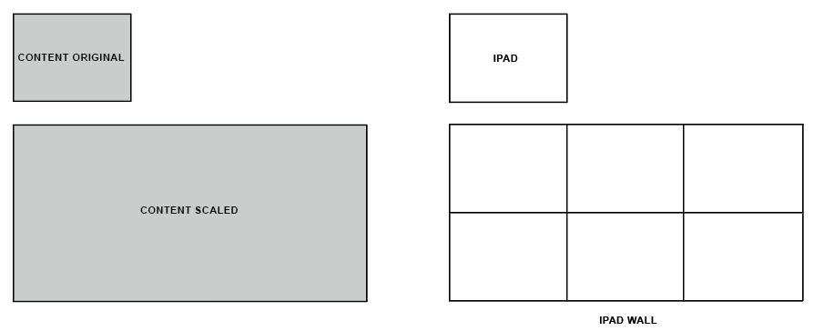
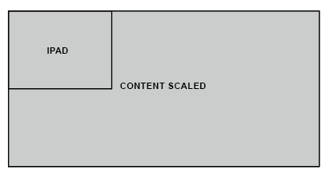
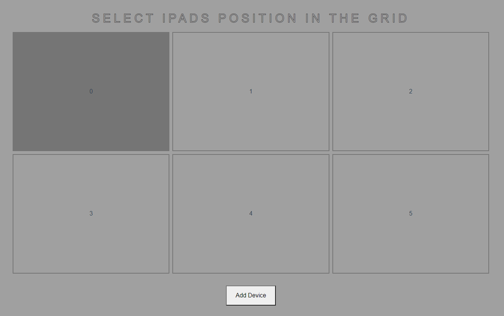

iPad Video Wall Prototype
ROLE:
Lead Software Developer
TOOLS:
JavaScript, HTML, CSS, NodeJs, VueJS, Websockets, HTML Canvas
2022
Having over a dozen matching iPads laying around the M1 Studio, I was tasked to build a demo web-based interactive iPad video wall
To achieve this, I wrote custom software to synchronize content across each iPad. When deciding how to build the software, I knew we needed something lightweight but capable of handling multiple connections and allowed for real-time data communication. I found NodeJS to be the best fit for our needs and ultimately chose our tech stack to be NodeJS for the backend and VueJS for the frontend. I also relied heavily on socket.io to handle the real-time data communication via web sockets.
I began development by working on synchronizing a video across just four iPads. For early testing, I cropped the video into four quadrants and stored each video section on the iPads. I then loaded the corresponding video section and set one iPad as the “master” device. Once the video is triggered to play, the master iPad begins to rapidly communicate its video position back to the Node server where that data is then broadcasted to the remaining iPads. From there, the iPads will slow or speed up their video position to match the master device. I used the browsers requestAnimationFrame() to rapidly update the master video position and socket.broadcast.emit() to send the position data to the other iPads.
Synchronized Video Playback Demo
This early solution was working well, however, it relied on having a pre-cropped video that matched the iPad grid size. Moving forward we knew we wanted more of an automated system that could display the content at any grid size. With this in mind, we decided to avoid programmatically cropping the content to match the grid and instead the app would scale the content to match the overall iPad wall size and then dynamically reposition the content element on each iPad.
Scaling the content was the easy part. We simply multiply the iPad width by the number of columns in our grid and then set that value as the width of our content.
Now each iPad in our grid should be displaying the content from the top left corner of the device.
This is great for the first iPad in our grid, however, the remaining iPads will be showing the same section of the content. To fix this, we have to dynamically reposition the content based on where each iPad is in the grid.
To tell the app where each iPad is in the grid, I built a UI that allows the user to select the grid position when joining the device to the network.
We can now use the index of the selected grid button to calculate the position of the content. First, we need to find the X and Y positions of the grid button. This can be done using the following equations written in JavaScript:
x = buttonIndex % totalColumns
y = Math.floor(buttonIndex / totalColumns)
Then we use these values to calculate where the content should be repositioned. The equations for that are as follows:
repositionX = -1 * (x * ipadWidth)
repositionY = -1 * (y * ipadHeight)
With all of this, each iPad in our wall is now displaying its correct section of the overall content. You can see this repositioning technique in action with this demo:
See the Pen Ipad Wall Canvas Position Demo by Joey (@joeymorello) on CodePen.
Interactive HTML Canvas Demo
To test a more interactive experience, I created this simple ring animation. When you tap the screen on the iPads, a ring will appear and animate outward across each iPad. This is a rough example but is great at showing how the individual iPads work together to create an overall image. To create the graphics I used HTML canvas and used web sockets to send the touch data between devices.